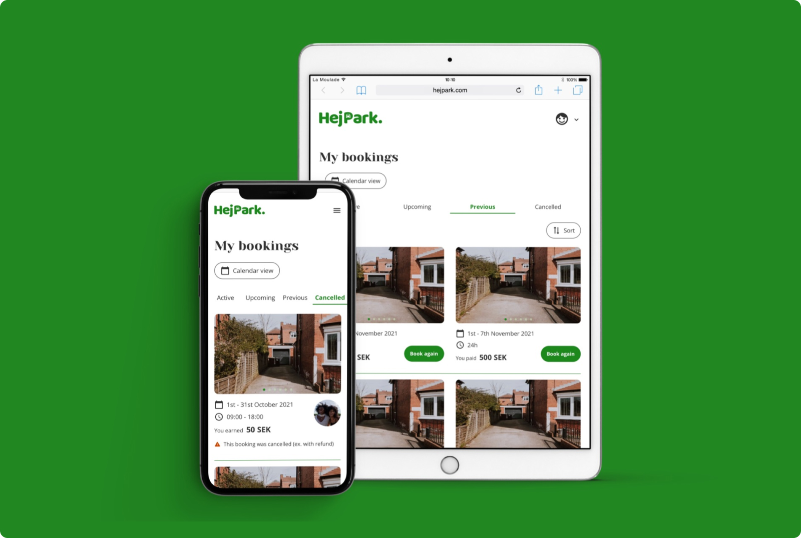
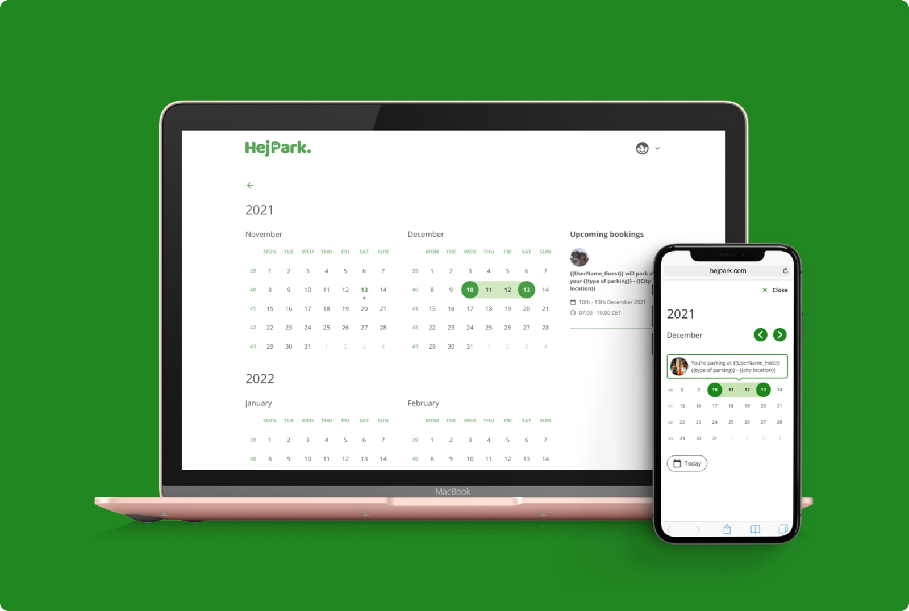
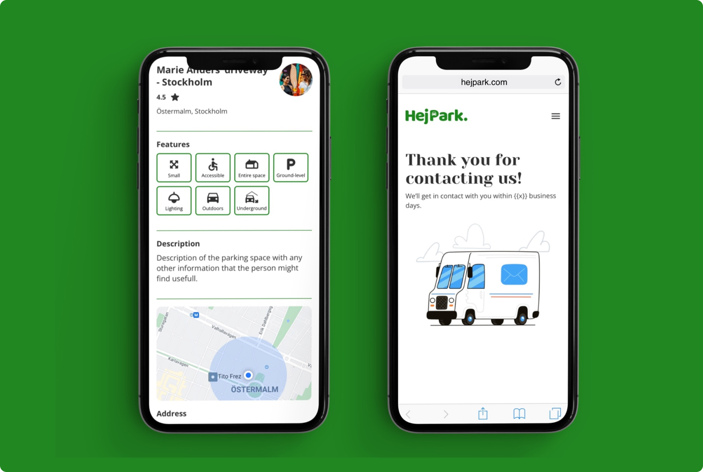
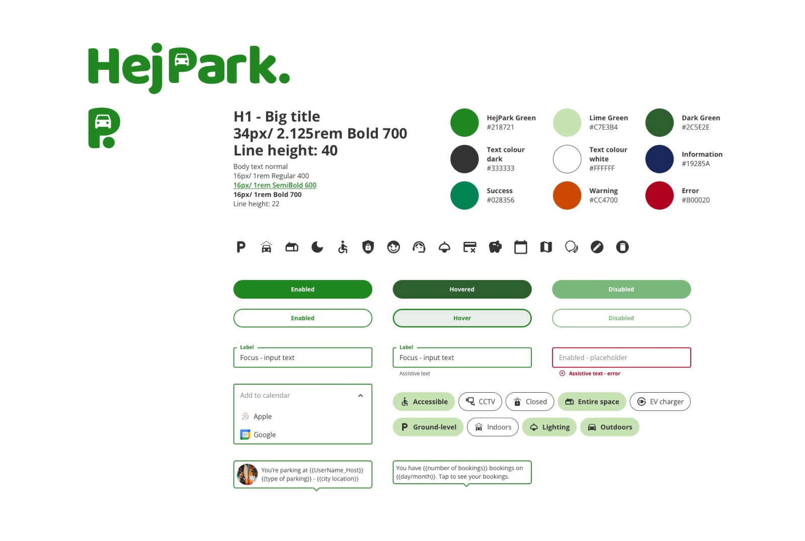

HejPark
TL;DR
Figma slides
Keynote presentationOverview
HejPark is Sweden’s first digital marketplace that connects drivers with available parking spaces in busy urban areas.
The product addresses a common friction point for city residents: the time, stress, and uncertainty involved in finding parking for everyday activities like school pick-ups, work commutes, and events.
The project was delivered end-to-end — from early concept and brand creation to a validated, development-ready product — using a no-code approach to reduce time-to-market and technical risk.
Business problem
Urban drivers in major Swedish cities face:
- • Spend 5–15 minutes searching for parking per trip (assumption based on urban mobility benchmarks)
- • Experience high stress in time-sensitive situations (school pick-up, events, commuting)
- • Lack transparency around availability, pricing, and space constraintsLimited visibility of available parking options
- At the same time, unused private and commercial parking spaces represent an untapped supply.
Business opportunity
- If even 1–3% of daily parking searches in major cities shift to a marketplace model, this represents a scalable recurring revenue opportunity while improving urban mobility efficiency.
- We aim to create a trusted, user-friendly marketplace that efficiently matches demand and supply, while enabling users to quickly choose the right parking space for their needs.
Objectives
& Success metrics
Reduce time to find parking
- KPI Time-to-parking decision
- From ~10 min → <2 min
Increase user confidence
- KPI Task success rate
- 80–90% success in testing
Validate marketplace demand
- KPI Repeat usage intent
- 60% + users indicate reuse
Enable fast launch
- KPI Time-to-market
- 50–70% faster via no-code
Target users
- • Urban residents and commuters in large Swedish cities
- • Time-constrained users willing to pay for convenience, certainty, and speed
Key behavioural insight
- Users value speed to decision over browsing depth, which directly informed product prioritisation.
Role &
Responsibilities
As Product Designer & Strategic Partner, I translated a concept into a validated product and guided decisions across design, business, and technology.
Key responsibilities:
- • Defined product vision and UX strategy
- • Led user research and testing cycles
- • Designed UX/UI, brand, and interaction model
- • Supported technical decision-making and ensured design integrity through development follow-up
Process &
Key decisions
Feature Prioritisation Based on Business Value
- User research showed that filtering by essential features (location, time, constraints) reduced cognitive load and increased decision speed.
- IMPACT ASSUMPTION
- Faster decisions → higher conversion → increased booking frequency
Marketplace Trust & Brand Strategy
- Design emphasised clarity, consistency, and simplicity to establish trust between users and space owners.
- IMPACT ASSUMPTION
- Improved trust → higher first-time booking rate and repeat usage
Scope & Delivery
Duration
- • 5 months part-time (strategy, UX, UI, branding)
- • 1 month development follow-up
Platforms
- • Responsive web app
Deliverables
- • Research insights & validated user flows
- • End-to-end UX/UI design
- • Brand & visual identity
- • Launch-ready, development-aligned product
Business impact
Time-to-market
- Reduced by ~50%
Cost efficiency
- Lowered initial dev cost by 40–60%
User efficiency
- Parking decision time reduced by ~80%
Risk reduction
- Business model validated before scaling
Scalability
- Platform-ready for city-by-city expansion
Key learnings
- • Strategic UX decisions directly influence conversion and retention
- • Early validation and no-code tooling can dramatically reduce business risk
- • Senior product designers must balance user needs, business constraints, and technical feasibility
- • Designing marketplaces requires equal focus on trust, clarity, and speed



